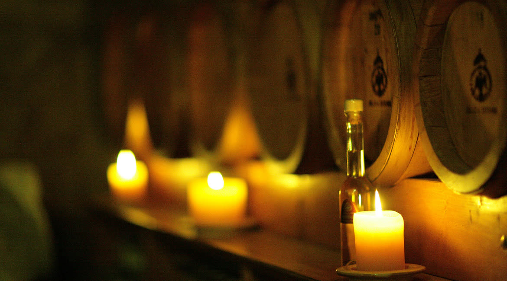
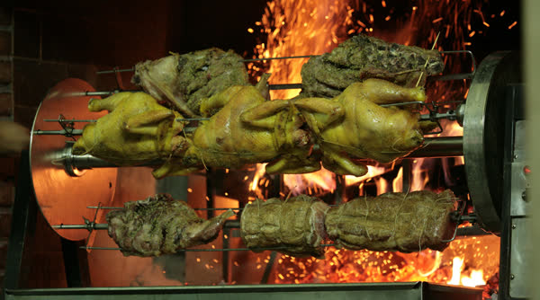
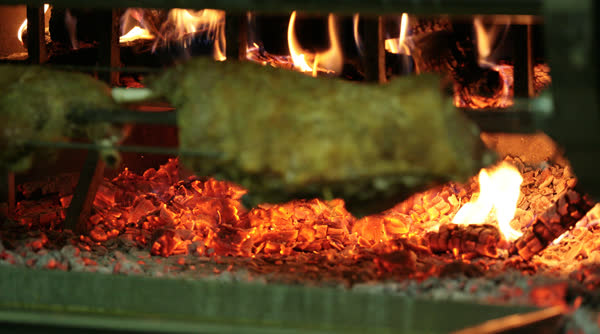
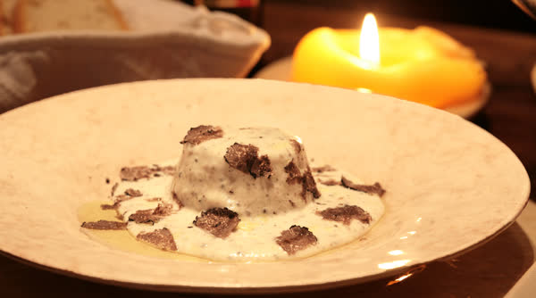
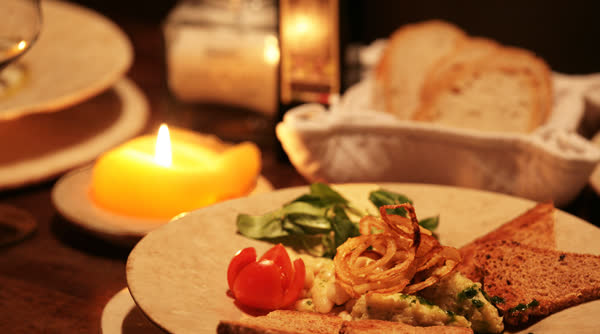
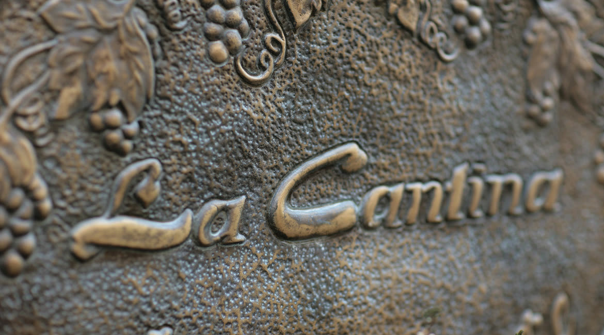

Ristorante · Spello (PG)
La Cantina di Spello
Volte di pietra, luci soffuse e candele di pura cera d’api.
Via Cavour 2, nel centro storico di Spello.
Il riconoscimento
Chiocciola Slow Food
Nella guida Osterie d’Italia 2026 di Slow Food, alla voce «Umbria | 10 Chiocciole», c’è La Cantina di Spello – Spello (PG).
Fonte: slowfood.it, Tutte le Chiocciole di Osterie d’Italia 2026, regione per regione. Su Tripadvisor la scheda del ristorante conta 2.165 recensioni.
Cosa si mangia
Prodotti locali di stagione
«Solo la conoscenza del territorio fa la differenza» è il motto dei soci del ristorante, quindi si servono prodotti locali di stagione.
«È assodato che esiste una relazione tra ciò che mangiamo e la nostra salute, il nostro benessere dipende da cosa e da quanto si mangia. La migliore cucina è quella della nostra civiltà contadina: sana, stagionale, gustosa, nutriente.»
- Gnocchi di patate rosse di Colfiorito al tartufo nero
- Filetto di chianina certificata dei pascoli della Valnerina
- Piccione alla griglia
- Sformatino di patate al tartufo nero
- Insalata di rapunzoli
- Frittata di uova al tartufo
- Cinghiale in tegame
- Purea di patate rosse di Colfiorito al tartufo
La pasta
Tutta la pasta viene tirata a mano.
I vini
Una cinquantina di etichette, e ci sono il sagrantino e i rossi di Montefalco.
Le materie prime
Chianina certificata dei pascoli della Valnerina, olio extravergine monocultivar moraiolo delle colline di Assisi e Spoleto, tartufo delle tartufaie del Monte Subasio.
Non solo a tavola
Si possono acquistare candele di pura cera d’api, sculture in marmo, piatti di ceramica artigianale umbra, confetture e grappe della casa.




La sala
Una cantina di pietra
Volte di pietra, luci soffuse e candele di pura cera d’api rendono la sala avvolgente e calda, esaltando lo stile decisamente informale degli arredi.

Dove siamo